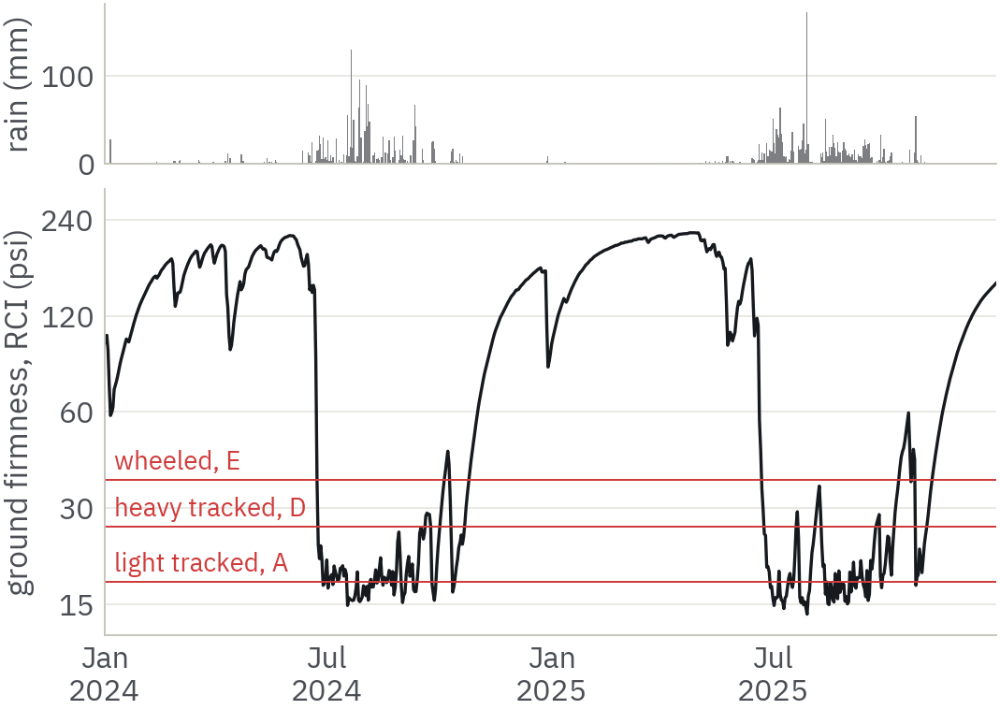
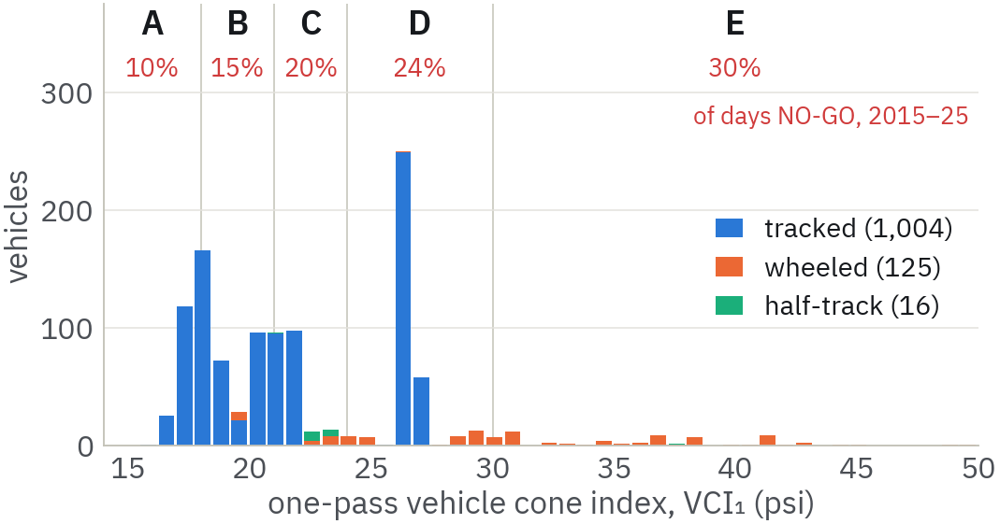
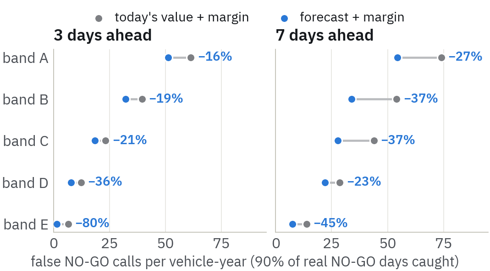
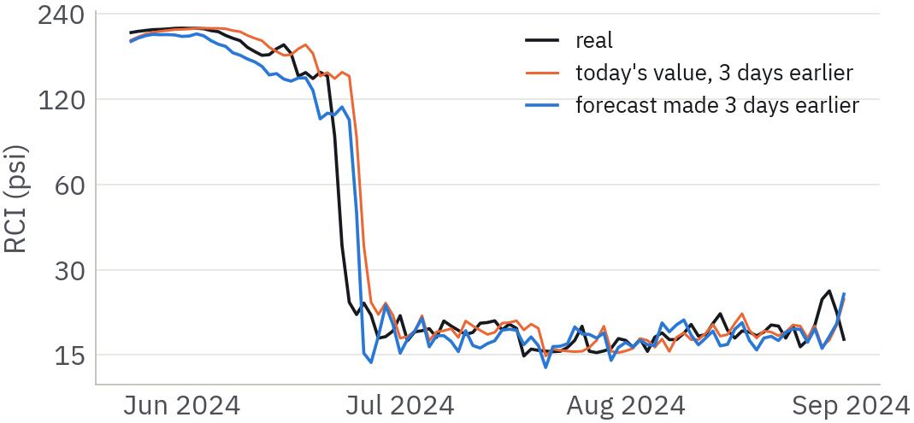
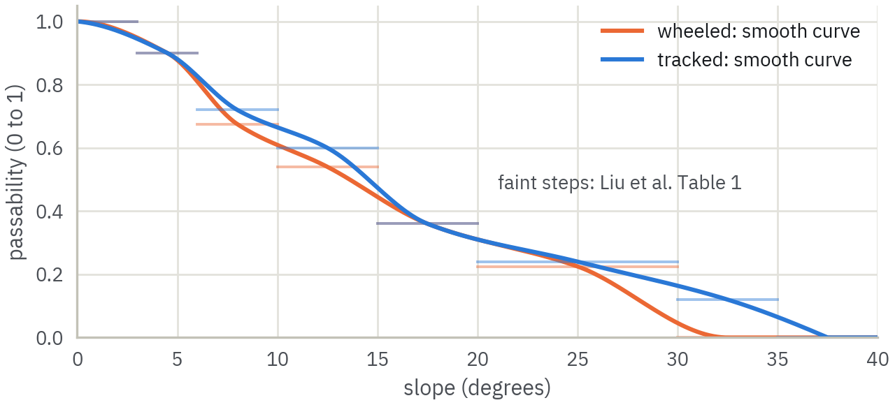
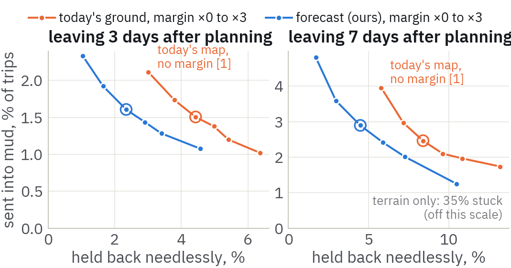
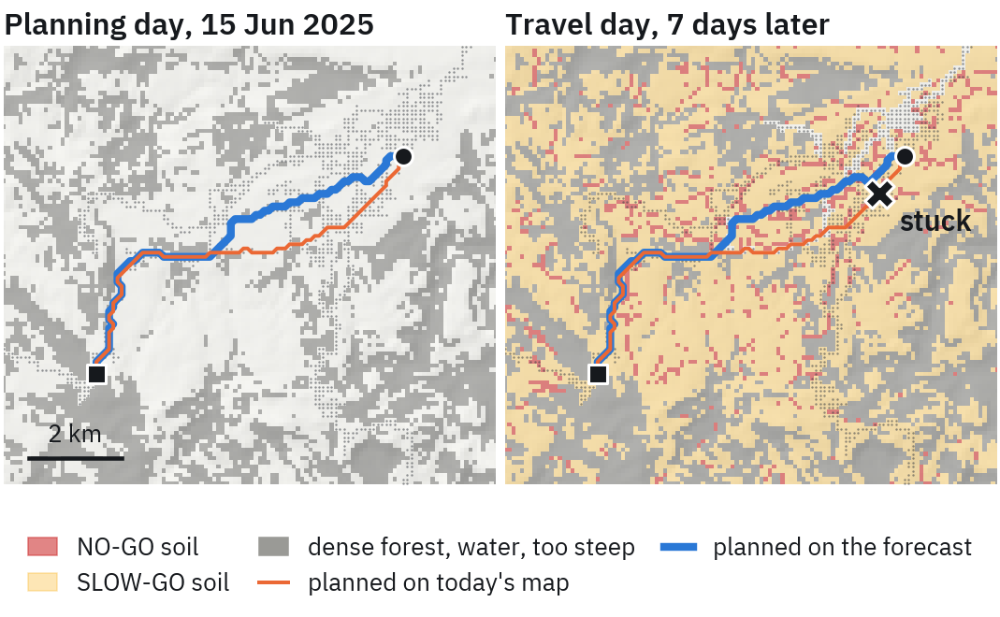
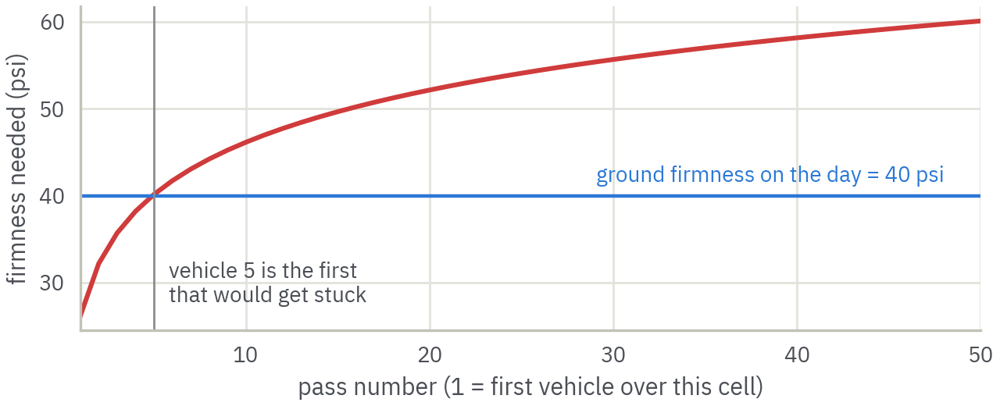
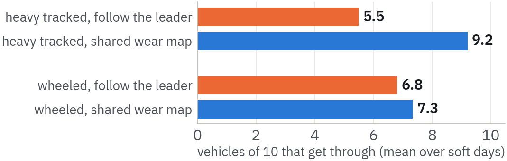
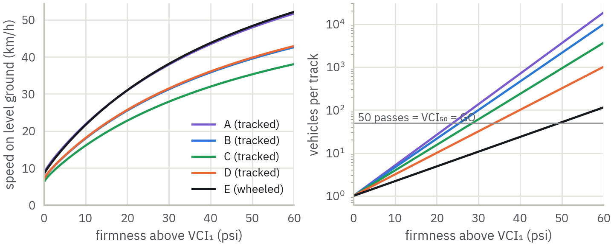

A from-scratch explainer of the project, the data, what was built and what it found, and what goes to the ICDCN 2027 poster track.
| Updated | 13 October 2026. Replaces the 10 October version. |
| Poster deadline | 15 October 2026 (2 days from this document) |
| Venue | ICDCN 2027, NITK Surathkal, India, 4–7 January 2027 |
| Project folder | Documents\meteorology |
Each section builds on the one before. Blue boxes explain an idea in plain words. Orange boxes are warnings. Green boxes are decisions made. Purple boxes are formulas, which you can skip. Every number here is read from the project's result files when this document is built, so it matches the poster and the abstract exactly.
| 1 | The problem in one page |
| 2 | Ideas you need first |
| 3 | The conference: what ICDCN wants |
| 4 | The data, file by file |
| 5 | The forecaster |
| 6 | What was built, step by step |
| 7 | One trip, end to end: every formula with real numbers |
| 8 | Your questions, answered |
| 9 | Limitations to be honest about |
| 10 | Status and what is needed from you |
| 11 | Where everything is |
| A | Glossary |
| B | Every formula: where it comes from and how it was set |
| C | References |
Military vehicles often have to leave the road: to get around a blocked bridge, to reach a position with no road to it, or because the road is too exposed. Off the road, the ground decides whether a vehicle can move. Dry, firm soil carries a heavy truck easily. The same soil after three days of monsoon rain can turn to mud that swallows the wheels.
Whether a piece of ground can carry a particular vehicle is called trafficability. Planners describe it with three labels:
| Label | Meaning |
|---|---|
| GO | The vehicle crosses normally, and many vehicles can follow in its tracks. |
| SLOW-GO | It gets across slowly, leaving ruts. Only a few vehicles can use the same track. |
| NO-GO | The vehicle gets stuck (or cannot climb, or cannot cross water). |
Two things make this hard. It changes over time: the ground is firm in May, soft in July and firm again by November, so a map of where vehicles can go is right for one day only. It depends on the vehicle: a light tracked carrier crosses ground that would trap a wheeled armoured car.
A vehicle (or a convoy) has to cross the Pachmarhi plateau in the next few days. Which route avoids getting stuck, given that the ground will be wetter or drier by the time it gets there?
Earlier work plans a route on the conditions today. We plan on a forecast of the travel day, made on the vehicle itself, and then check against two past monsoons whether that avoids routes that looked fine on planning day but failed later.
Pachmarhi is a hill station on the Satpura plateau in Madhya Pradesh, about 1,067 m above sea level. Most of its rain falls from June to September, so the ground swings from very firm to very soft every year. That makes it a good test site.
Engineers measure ground firmness with a cone penetrometer: a rod with a small cone on the tip, pushed into the soil. The harder you have to push, the firmer the ground. The rating cone index (RCI) is a version of that reading that also allows for how much the soil weakens when vehicles knead it. Higher RCI means firmer ground. In this project RCI is the single number that says how firm the ground is on a given day.
Every vehicle has a vehicle cone index (VCI), the firmness it needs to get through. Heavy vehicles on narrow tyres need firm ground; light vehicles on wide tracks manage softer ground. VCI₁ is what one vehicle needs to pass once. VCI₅₀ is what fifty vehicles need to use the same track, and it is higher, because each vehicle churns the soil for the next.
The 10 October version warned that the code labelled cone index in kPa when the numbers were really in pounds per square inch (psi). The vehicle formulas (Section 6) produce psi, the field readings we rely on are in psi, and everything is now labelled psi.
A NO-GO warning can be wrong two ways. Missing a real NO-GO day sends vehicles out to get stuck (low recall). Warning on a day that was fine keeps a unit parked for nothing (low precision). You can always catch every NO-GO day by warning every day, so both must be reported together.
Routes have the same pair. A planner can send a vehicle along a route that turns out to be NO-GO (stuck), or find no route when one existed (held back). Every route result in this document reports both.
The map is cut into 90 m square cells, each with a cost: cheap if the ground is easy, expensive if it is slow, forbidden if it is NO-GO. A route is a chain of neighbouring cells and its cost is the sum. A* and Dijkstra's algorithm both find the cheapest route exactly. We use Dijkstra, because one run gives routes from a start to every destination at once, which the backtest needs. A* would find the same routes.
A fuzzy set lets things belong partly, with a degree between 0 and 1: a 12° slope can be "passable" to degree 0.55 [8]. Fuzzy AND is usually the minimum: "passable by slope AND by soil" is only as true as the weaker of the two. That is why a lake cell scores 0 however good its slope is.
Running software on a device in the field (a vehicle, a drone, a computer at a forward base) rather than in a distant data centre. It matters when the network is slow, unreliable or jammed, which is normal in military operations.
ICDCN is the International Conference on Distributed Computing and Networking. The 2027 edition (the 28th) is at NITK Surathkal, 4–7 January 2027, and has a poster track for early-stage work.
| Item | Detail |
|---|---|
| What you submit | A 2-page extended abstract, two-column ACM format, fonts embedded, through EasyChair (track "ICDCN 2027 — Poster") |
| What you print | The poster itself, shown on an easel if accepted. ICDCN sets no size; we used A0 portrait, the usual default (MobiSys requires A0, COMSNETS accepts A0) |
| Review | Single-blind: reviewers see author names, so names go on page 1 |
| Dates | Submit by 15 October 2026. Notification 7 Nov. Camera-ready and registration 14 Nov |
| Judged on | "Technical merit and innovation as well as the potential to stimulate interesting discussions" |
| Presentation | In person only. No remote presentation |
| Publication | ACM Digital Library. ACM is now fully open access: authors at non-member institutions may owe a fee unless waived |
A poster that only says "we forecast soil strength with machine learning" sits outside ICDCN's main subjects. Applied work does get in when it ties to the call's topics, which include machine learning applications, edge computing, cyber-physical systems and vehicular networks.
The planner runs on a vehicle with no weather service and no network. We back that with systems numbers: 531k parameters, 12 ms per forecast on one CPU core, and 18 bytes to send a 7-day forecast. The convoy experiment adds a genuinely distributed problem: vehicles planning on a shared map that they change as they drive, and exchanging only their tracks.
One row per day from 1 January 2015 to 31 December 2025 (4,018 days, none missing), with rainfall, temperature, humidity, wind, pressure, cloud cover and, most importantly, soil moisture in two layers (0–7 cm and 7–28 cm).
ERA5-Land soil moisture is a model output, not a measurement. Everything built on it inherits that.
The weather file has no trafficability column, so the project derives one. ERA5-Land has already turned rain and evaporation into soil moisture. We combine the two layers into a soil wetness index (SWI), turn that into RCI, and compare it with each vehicle's VCI.
SWI = 0.35 · s0–7 cm + 0.65 · s7–28 cm, each layer scaled to 0 (driest) – 1 (wettest) over the 11 years.
RCI = 300 · e−2.996 · SWI · (1 − 0.15 · min(R3 days / 50 mm, 1)) psi.
The deeper layer weighs more because vehicles sink about 15–30 cm. The last factor briefly lowers firmness after rain, by at most 15%.
With 25 psi as the wettest possible value, the ground never got softer than about 22 psi. Most light and medium tracked vehicles need less than that, so 695 of 1,004 of them could never be NO-GO. That was an artefact of one assumed number, not a finding. Roșca et al. [2] measured 14–25 psi on the field lanes where their 4×4 bogged down, so the wettest value is now 15 psi. Every vehicle band now has real NO-GO days (10–30% of days), and the forecaster was retrained on the new target.

The GeoTIFF export arrived: three files, one per season (monsoon, summer, winter), each a 17-layer stack on one 30 m grid of 945 × 761 cells, about 28 × 23 km, in UTM zone 43N. It holds exactly what was asked for, and more:
| Layers | Source | Used for |
|---|---|---|
| Elevation, slope, aspect, roughness (TRI) | Elevation model | Slope scores; wetness index |
| ESA WorldCover land cover [5] | Sentinel-1/2 | Land-cover scores |
| NDVI, NDWI, bare-soil and snow indices | Sentinel-2 | Canopy density (NDVI) |
| Radar VV, VH, ratio, 4 texture layers | Sentinel-1 | Not used (see below) |
| Land surface temperature | Thermal | Not used |
The parquet tables beside them hold the same pixels without map coordinates, so the
project reads the GeoTIFFs. The old maps.zip pictures are kept but no longer used.
The road network comes from OpenStreetMap [9]: 403 road segments a vehicle can use
(footpaths and steps dropped).
2,451 rows, one per vehicle, with 34 columns such as mass, engine power, armour and weapons.
A datamine of the video game War Thunder (game-engine fields such as bone_gun,
joke entries such as "santa" and railway wagons). Two problems turned out to be bigger than first
thought:
The ZIS-30, listed as a "truck", is a tracked tank destroyer on an artillery-tractor chassis. The ZIS-43 is a half-track. Classification is now done by name with checked keyword lists.
| Band | VCI₁ range (psi) | Mostly | Vehicles | Typical VCI₁ / VCI₅₀ | Days NO-GO, 2015–25 |
|---|---|---|---|---|---|
| A | 0–18 | light tracked | 209 | 17.6 / 41.5 | 10% |
| B | 18–21 | light-medium tracked | 321 | 19.0 / 44.5 | 15% |
| C | 21–24 | medium tracked, some half-tracks | 199 | 21.6 / 50.2 | 20% |
| D | 24–30 | heavy tracked, some wheeled | 347 | 26.2 / 60.1 | 24% |
| E | 30+ | medium and heavy wheeled | 69 | 36.7 / 86.2 | 30% |

Construction of dynamic trafficability map for unmanned vehicles considering multiple environmental factors and path planning, Scientific Reports 15:9957 [1]. They scored 11 factors (slope, land cover, rainfall and others) from lookup tables, combined them with a weighted average whose weights came from expert comparisons (AHP), forced any cell that is NO-GO in one factor to NO-GO, and planned routes with A* for one wheeled and one tracked vehicle.
What we take from them: their slope and land-cover tables, and their weights as the comparison baseline. What we add: planning on a forecast of the travel day instead of the conditions at the time, checking the routes against what really happened, a fleet of 1,145 vehicles instead of two, and vehicles that change the ground for each other.
Ground firmness changes slowly: today's value is almost exactly yesterday's. A model asked to predict tomorrow's level learns to copy today. So every model predicts the change from today, and today's value is added back afterwards.
The September comparison chose a GRU (a recurrent neural network, 128 units in 2 layers) averaged with a ridge regression. Width helped more than architecture; attention and bidirectional variants made it worse. That model was retrained for the new firmness target (Section 4.2), with three GRUs from different random starts averaged.
| Model | RMSE, 1 day (psi) | 3 days | 7 days | Skill at 7 days |
|---|---|---|---|---|
| GRU + ridge, averaged (chosen) | 6.05 | 13.29 | 20.76 | +20% |
| GRU alone | 6.14 | 13.98 | 21.85 | +16% |
| Ridge alone | 6.31 | 13.86 | 21.92 | +16% |
| Persistence ('same as today') | 6.71 | 15.16 | 26.02 | +0% |
The model comparison in outputs/forecasting (the ensemble table, the TFT results)
was computed with the old firmness target. Its conclusions about which model to use stand; its
numbers must not be quoted. The figures above are the current ones.
The model's average error rewards predicting values near the middle, and NO-GO days are the extreme. So the forecast is lowered by a safety margin before it is compared with VCI₁, and borderline days get called NO-GO. There is one margin per firmness band and lead time, set to the smallest that catches 90% of NO-GO days.
A margin tuned and tested on the same days always looks good. Each margin is tuned on 2024 and scored on 2025, then the other way round, and the two results are pooled.
| Band (7 days ahead) | Today's value + margin: recall / false alarms per vehicle-year | Forecast + margin: same | Margin tuned on 2024 / 2025 (psi) |
|---|---|---|---|
| A | 89% / 74 | 91% / 54 | 13.8 / 7.0 |
| B | 88% / 54 | 91% / 34 | 10.8 / 9.2 |
| C | 90% / 44 | 90% / 28 | 10.8 / 17.8 |
| D | 91% / 29 | 90% / 22 | 19.5 / 14.8 |
| E | 90% / 14 | 90% / 8 | 6.0 / 9.8 |
At the same catch rate, the forecast raises 23–45% fewer false alarms at 7 days than putting the same kind of margin on today's value.

The same band's margin can differ by up to 7.2 psi depending on which year it was tuned on. The cross-year scoring above already includes that cost, but a field system would need margins re-checked as more years come in.
The TFT model's "P10" rule reached 91.4% NO-GO recall by calling NO-GO far too often, and its margin was unstable across years. It was rejected in September, and the README now says so.
The forecaster sees only the local weather log, not a weather forecast. Nothing in that log announces the day the monsoon breaks, so on the first days of the monsoon every planner gets caught out. The gain comes in the days around the transitions, when the ground keeps changing and the forecast tracks it.

Each vehicle needs VCI₁ and VCI₅₀. They come from the US Army's Mobility Index method (NRMM; test procedure TOP 02-2-619A), which turns weight, track or tyre size, ground clearance, power and gearbox into one number. The Mobility Index tables and all four MI-to-VCI curves come from Rula and Nuttall [12] and the NRMM Edition I users guide [13]; the wheeled additions of NRMM II (weight factor above 31,500 lb, VCI₁ above MI 115, tyre deflection) follow Roșca and Ciobotaru [14] and Roșca et al. [2], and the tracked worked example is Ciobotaru's [3].
Tracked: MI = (CPF·WF / (TEF·GF) + BF − CF) · EF · TF, with CPF = W / (2·L·B), TEF = B/100, BF = W / (10 · road wheels · shoe area), CF = clearance/10. VCI₁ = 7.0 + 0.2·MI − 39.2/(MI + 5.6); VCI₅₀ = 19.27 + 0.43·MI − 125.79/(MI + 7.08).
Wheeled: MI = (CPF·WF / (TEF·GF) + WLF − CF) · EF · TF, with CPF = axle load / (0.5 · tyres per axle · diameter · width), TEF = (10 + width)/100, WLF = axle load/2000. VCI₁ = 11.48 + 0.2·MI − 39.2/(MI + 3.74) up to MI 115, 4.1·MI^0.446 above; VCI₅₀ = 28.23 + 0.43·MI − 92.67/(MI + 3.67). The engine factor is 1.05 below 10 hp per short ton (2,000 lb). Loads in lb, lengths in inches, VCI in psi.
With the M1 Abrams' public specifications, the tracked code gives MI 98.61, VCI₁ 26.35 and VCI₅₀ 60.48. Ciobotaru [3] reports 98.59, 26.34 and 60.48. For the six 8×8 personnel carriers of Roșca and Ciobotaru [14], the wheeled code matches 22 of the 24 published VCI values to the nearest psi; the other two (one vehicle's VCI₅₀) are within 1.7 psi.
What had to be assumed. The file has no track or tyre sizes, so they come from weight: tracks interpolated between real vehicles from the M22 Locust to the Tiger II, tyres by the load each axle carries. Transmissions are taken as automatic and tyres at road pressure. Half-tracks have no standard formula: the track unit is rated as tracked, the front axle as a wheeled axle carrying 25% of the weight, and the worse of the two governs.
Each 90 m cell gets a 0–1 score for slope and for land cover, per vehicle type, from Liu et al.'s tables. The slope steps are smoothed into a curve, so a 0.2° change cannot flip a decision. Tree cover is split by canopy density, using each cell's greenest NDVI across the three seasons. The plateau forest is deciduous, so one season's NDVI tracks leaves, not trees.
Before any soil is considered, 26% of the plateau is passable for wheeled vehicles (mostly roads and open land) and 72% for tracked ones.

The forecast is one value for a 9 km weather cell, which on its own would make the whole map wet or dry at once. Each cell's soil wetness is shifted by its wetness index: low, convergent cells up to 0.2 wetter, ridges up to 0.2 drier, the average unchanged. In the firmness formula that is RCIcell = RCI · e−2.996 · shift. Paved roads ignore soil; unpaved tracks soften like any ground.
This spreading has no field measurements behind it. The poster and abstract say so.
Soil scores 0 below VCI₁ (NO-GO) and rises to 1 at VCI₅₀, so SLOW-GO ground is slow but allowed. The three scores combine by fuzzy AND, the minimum. A cell is as passable as its worst factor, so a deal-breaker can never be averaged away. Step 8 turns the SLOW-GO range into two plain numbers: vehicles per track and km/h.
The planner finds the fastest route, with speed proportional to the cell's score, on a grid of 253 × 315 cells. Five planners are compared:
| Planner | Map it uses |
|---|---|
| Terrain only | Slope and land cover, no soil |
| Today's map | Today's ground, which is what Liu et al. do |
| Today + margin | Today's ground minus a safety margin |
| Forecast + margin (ours) | The forecast for the travel day minus the band's margin |
| Oracle | The real ground on the travel day, used only to score the others |
"Speed proportional to the score" makes the route cost a relative time, not minutes. Step 8 adds a speed model in km/h, and the same maps can be routed by real travel time instead.
For every day of 2024–25 (724 planning days), each of the five bands, and departures 1, 3 or 7 days after planning: 30 trips of 8–25 km between points on the plateau's road network. That is 325,800 trips per planner. Every route is checked against the real ground on the travel day.
| Planner: stuck / held back | 1 day | 3 days | 7 days |
|---|---|---|---|
| Terrain only (no soil) | 35.5% / 0.0% | 35.5% / 0.0% | 35.5% / 0.0% |
| Today's map (what Liu et al. do) | 0.8% / 1.1% | 2.1% / 3.0% | 4.0% / 5.8% |
| Today's map + safety margin | 0.7% / 1.5% | 1.5% / 4.4% | 2.5% / 8.4% |
| Forecast + safety margin (ours) | 0.7% / 0.7% | 1.6% / 2.3% | 2.9% / 4.5% |

| Combining slope, cover and soil: stuck | 1 day | 3 days | 7 days |
|---|---|---|---|
| Fuzzy AND, minimum (ours) | 0.7% | 1.6% | 2.9% |
| Fuzzy AND, product | 0.7% | 1.6% | 2.9% |
| Weighted mean + veto (Liu et al.) | 0.9% | 1.8% | 3.0% |
| Weighted mean, no veto | 34.6% | 34.8% | 34.9% |
Liu et al.'s weighted mean needs their veto to work: without it, a third of trips go into mud. With the veto it is close to the minimum, slightly worse.

Every vehicle that crosses soft ground churns it, so the next one needs firmer ground. Each cell counts how many vehicles have crossed it.
Firmness needed on pass n = VCI₁ + (VCI₅₀ − VCI₁) · ln(n) / ln(50). The curve is our own assumption, chosen so that pass 1 gives VCI₁ and pass 50 gives VCI₅₀; it is not a published law. The start and finish areas are not churned, because every vehicle has to use them.

Two ways of moving ten vehicles, on 54 soft days:
Heavy tracked vehicles: 5.5 of 10 get through following the leader, 9.2 with the shared map, for 7.2 kB of track updates per convoy. Wheeled vehicles: 6.8 and 7.3. In this forest they have few parallel lanes to spread onto.

SLOW-GO covers everything from "one vehicle gets across, barely" to "forty-nine vehicles can use the same track at a decent pace". A commander needs to know where in that range the day falls. Two numbers now say it: how many vehicles one track carries, and how fast the band can drive.
VCI₁ is the firmness one vehicle needs; VCI₅₀ is the firmness fifty vehicles need on the same track. Every pass churns the soil, so each vehicle needs a little more firmness than the one before it. Ground that sits partway between VCI₁ and VCI₅₀ carries a number of vehicles partway between 1 and 50. This is the convoy wear rule of Step 7 turned round: Step 7 asks "how firm must the ground be for vehicle number n?", this asks "how many vehicles can this ground take?".
passes n = 50(RCI − VCI₁) / (VCI₅₀ − VCI₁)
It gives 1 at VCI₁, 50 at VCI₅₀ (GO), and 0 below VCI₁ (NO-GO). It is the exact inverse of the wear rule, firmness needed = VCI₁ + (VCI₅₀ − VCI₁)·ln(n)/ln(50).
The published sources give only the two end points, 1 pass and 50 passes [12]. The logarithmic curve between them is ours, shared with the wear rule.
The speed comes from the soil relations of the NATO Reference Mobility Model (NRMM), the model the US Army and NATO use to predict cross-country speed [13]. Its fine-grained soil relations were fitted to more than 1,600 field tests with wheeled and tracked vehicles [12]. In plain words, a vehicle on soft ground faces three things:
On a slope the vehicle also has to lift its own weight, so the force it needs is the soil drag plus the slope. If the soil cannot grip hard enough to supply that force, the vehicle is stuck on that slope even though the soil is above VCI₁. Otherwise the engine sets the speed: power is force times speed, so speed = engine power ÷ force needed. Finally the tracks or wheels slip a little in soft soil, which takes some of that speed away.
x = RCI − VCI₁
Drawbar pull at 20% slip: D/W = a + bx − √((a + bx)² − cx) for x ≥ 0; s·x below.
Motion resistance: R/W = p + q / (x + r) for x ≥ 0; u − s′x below.
Most traction the soil can give (at 100% slip): CF = D/W − k₁ + R/W, TFOR/W = CF + k₂.
Force needed on a slope of angle θ: load = sin θ + R/W · cos θ. Stuck if TFOR/W · cos θ < load.
Slip: S = αy + β + γ/(δ − y), with y = load / cos θ − CF.
Speed: v = η · P / (W · load) · (1 − S), capped at the top speed. P engine power, W weight, η = 80% of the engine's power reaching the tracks or wheels.
Paved road ignores the soil: R/W = 0.045 for tracks, 0.007 + 0.0939/tyre pressure for tyres [13].
| Running gear (contact pressure) | a, b, c, s | p, q, r, u, s′ | k₁, k₂ | α, β, γ, δ |
|---|---|---|---|---|
| Tracked, below 4 psi | .544, .0463, .0702, .076 | .045, 2.3075, 6.5, .4, .072 | .758, .82 | .0257, −.0161, .01519, .8353 |
| Tracked, 4 psi or more | .455, .0392, .0526, .056 | .045, 2.3075, 6.5, .4, .052 | .671, .71 | .0733, −.0063, .00734, .7177 |
| Wheeled, below 4 psi | .3885, .0265, .0358, .046 | .035, .861, 3.249, .3, .043 | .674, .76 | .0621, −.021, .01888, .7794 |
| Wheeled, 4 psi or more | .379, .0219, .0257, .033 | .045, 2.3075, 6.5, .4, .029 | .585, .655 | .084, −.016, .01414, .6697 |
| Band | Type | hp/t | Contact pressure (psi) | km/h at VCI₁ | +5 psi | +10 | +20 | +40 | Vehicles per track at +5 / +10 / +20 psi |
|---|---|---|---|---|---|---|---|---|---|
| A | tracked | 19.0 | 9.2 | 8 | 16 | 22 | 31 | 43 | 2 / 5 / 26 |
| B | tracked | 15.6 | 9.5 | 7 | 13 | 18 | 25 | 36 | 2 / 5 / 21 |
| C | tracked | 14.0 | 12.0 | 6 | 12 | 16 | 23 | 32 | 2 / 4 / 15 |
| D | tracked | 15.7 | 12.8 | 7 | 13 | 18 | 26 | 36 | 2 / 3 / 10 |
| E | wheeled | 19.2 | 20.0 | 8 | 16 | 22 | 31 | 44 | 1 / 2 / 5 |
Each band's planning vehicle takes the median power-to-weight and contact pressure of the band's vehicles of its type.

Every map cell now has a speed: the soil speed above, using the slope along the direction of travel (from the elevation of the two cells), so uphill is slower than downhill. Off the road the speed is scaled by the land-cover score, so open forest is slower than grass. Paved roads use road rolling resistance and ignore the soil. A step between two cells takes half its length at each cell's speed, and Dijkstra finds the route with the least total time. The result is a trip time in minutes.
| Planner: stuck / held back / minutes per trip | 1 day | 3 days | 7 days |
|---|---|---|---|
| Published planner (passability cost) | 0.7% / 0.7% / 32.5 min | 1.7% / 2.3% / 32.4 min | 2.9% / 4.5% / 32.2 min |
| Routed by travel time | 0.8% / 0.7% / 31.0 min | 1.6% / 2.4% / 30.8 min | 2.9% / 4.5% / 30.7 min |
| What | Value |
|---|---|
| Model size (3 GRUs of 176,775 parameters, plus ridge) | 531k parameters, 2.0 MB |
| One 7-day forecast, one CPU thread | 12 ms (+ 21 ms to build inputs) |
| Re-planning one route, 76k-cell map | 19 ms |
| Re-planning one route by travel time | 82 ms |
| Sending a 7-day forecast | 18 bytes |
| Sending one passability map instead | 76 kB (4,200× more) |
| Maps for 5 bands × 7 days | 2.7 MB |
Because every vehicle rebuilds its own maps from the forecast and the shared tracks, the
radio link only ever carries the small things. Passes and speed are worked out on the vehicle
from the same 18-byte forecast, so they add nothing to the link. In the edge bundle,
outlook() gives status, passes and level-ground km/h for each of the next 7 days, and
plan(..., by="time") routes by travel time.
This follows one real planning day through every stage, from the weather log to the route and the check on the travel day. On 24 October 2024 the plateau was drying out after the monsoon: firmness was 33.2 psi. A band-D unit (heavy tracked) plans a trip for 27 October 2024, three days later. Every number below is computed by the project's own code when this document is built; where a stage can be checked against another part of the pipeline, the build checks it.
| Stage | Formula | With the numbers | Result |
|---|---|---|---|
| 1. Soil moisture → wetness | s = (θ − 20) / (49 − 20), clipped to 0–1 SWI = 0.35·s0–7 + 0.65·s7–28 | θ = 40.3 and 41.9 vol% → s = 0.700, 0.754 SWI = 0.35·0.700 + 0.65·0.754 | SWI = 0.735 |
| 2. Wetness → firmness today | RCI = 300·e−2.996·SWI·(1 − 0.15·min(R3d/50, 1)) | R3d = 0.0 mm → rain factor 1.000 300·e−2.996·0.735·1.000 | RCItoday = 33.2 psi |
| 3. Forecast for the travel day | RCIt+3 = RCIt + ½·(ΔGRU + Δridge) | 33.2 + ½·(+6.99 + 12.40) 3 GRUs averaged: ΔGRU; 1 ridge regression: Δridge | RCIforecast = 42.9 psi |
| 4. Safety margin | RCIsafe = forecast − m(band, lead) | m(D, 3 days) = 1.75 psi, tuned on 2025 42.9 − 1.75 | RCIsafe = 41.1 psi |
| 5. A band-D vehicle → MI | MI = (CPF·WF / (TEF·GF) + BF − CF)·EF·TF | 50.0 t = 110,231 lb, 810 hp; tracks 24.4 × 176 in, 14 road wheels, clearance 18.8 in CPF = 12.82, WF = 1.8, TEF = 0.244, GF = 1, BF = 4.97, CF = 1.88, EF = 1.00, TF = 1 | MI = 97.72 |
| 6. MI → vehicle cone index | VCI₁ = 7.0 + 0.2·MI − 39.2/(MI + 5.6) VCI₅₀ = 19.27 + 0.43·MI − 125.79/(MI + 7.08) | MI = 97.72 | VCI₁ = 26.2, VCI₅₀ = 60.1 psi |
| 7. Band planning vehicle | median VCI₁, VCI₅₀, power-to-weight and contact pressure of band D's tracked vehicles | 347 vehicles in band D | VCI₁ 26.2, VCI₅₀ 60.1 psi; 15.7 hp/t; CPF 12.8 psi |
| 8. Decision | NO-GO if RCIsafe < VCI₁; SLOW-GO if < VCI₅₀; else GO | 26.2 ≤ 41.1 < 60.1 | SLOW-GO |
| 9. Passes per track | n = 50(RCI − VCI₁)/(VCI₅₀ − VCI₁) | 50(41.1 − 26.2)/(60.1 − 26.2) | 5.6 → 5 vehicles per track |
| 10. Soil traction (NRMM) | x = RCI − VCI₁ D/W = a + bx − √((a + bx)² − cx) R/W = p + q/(x + r) | x = 15.0 psi; tracked, CPF ≥ 4 psi D/W = 0.496, R/W = 0.153 TFOR/W = D/W − 0.671 + R/W + 0.71 = 0.687 | moves if TFOR/W ≥ R/W (0.687 ≥ 0.153) |
| 11. Speed on level ground | v = η·P / (W·R/W) · (1 − S), capped at top speed | η = 0.8, P/W = 15.7 hp/t → power-limited 22.6 km/h slip S at y = R/W − CF = 0.175: 2.0% | 22.1 km/h |
| 12. Firmness in one map cell | shift = 0.10·clip(zTWI, −2, 2); RCIcell = RCI·e−2.996·shift | the route's weakest unpaved-track cell: z = +0.62 → shift +0.062 | RCIcell = 34.1 psi |
| 13. Cell passability | min(slope score, cover score, soil score) soil = 0.25 + 0.75·(RCI − VCI₁)/(VCI₅₀ − VCI₁) | unpaved track: slope and cover count as 1 on roads; soil 0.25 + 0.75·(34.1 − 26.2)/(60.1 − 26.2) = 0.43 | μ = 0.43 |
| 14. Route (published planner) | Dijkstra on cost = step·½(1/μu + 1/μv) | trip of 26.9 km on the grid, 253 cells | cost 29.52 (km ÷ speed fraction) |
| 15. Speed in that cell | same as 10–11 with load = sin θ + R/W·cos θ, × cover score | step into the cell: grade +8.2%, cell RCI 34.1 psi | 11.5 km/h |
| 16. Travel time | Σ step·½(1/vu + 1/vv) | this route; the route chosen by travel time instead | 46 min; 44 min |
| 17. Check on the travel day | real RCI on the travel day, same map rules | 27 Oct 2024: RCI 42.2 psi | route passable; 45 min (best possible 44) |
| 18. What is radioed | 4-byte day number + 7 × 16-bit firmness values | 4 + 7 × 2 | 18 bytes |
Not for this poster. JEPA teaches an image model without labels by predicting hidden parts of images. It needs a large amount of imagery and a labelled task to show it helped. We have three seasonal snapshots of one area and no labels. It is a good future-work line: a JEPA-style model trained on years of Sentinel-1 and Sentinel-2 images could learn how the terrain changes over time.
Yes, but not because of the new data. The vehicle file and the maps still add nothing the forecaster can use, since it predicts one plateau-wide firmness from the weather log. It was retrained because the firmness target itself changed (Section 4.2). That took under a minute on the GPU.
No. The labels are firmness with cut-offs applied, so a classifier would learn a blurrier copy of the forecast. One forecaster serves every vehicle, because only the cut-offs change. There are no ground-truth labels for the map. The per-band margin does the decision job.
Yes, and it is built (Step 7): pass-count wear on a shared map. Ruts that persist and recover over days, and full soil physics, remain future work. Both need measurements we do not have.
Yes, and it is built. Smooth curves replace Liu's step tables, and the fuzzy AND (minimum) combines factors without needing a veto. The comparison against Liu's weighted average is in Step 6.
No. This is preliminary work. The poster uses every usable vehicle in the file, of any origin, reported by firmness band.
| Limitation | Why it matters | What we do |
|---|---|---|
| Ground firmness is computed, not measured | No cone-penetrometer readings from Pachmarhi | State it; field readings are the first next step |
| Wettest firmness value (15 psi) from one field study | It sets how often light vehicles are stuck | Cite the study; note it on the poster |
| One 9 km weather cell | Real firmness varies over metres | Spread by wetness index; say it is a rule of thumb |
| Vehicle data from a video game | Masses are template values | Correct the worst; disclose; report bands only |
| Track and tyre sizes assumed by weight | They drive the cone index | Interpolate between real vehicles; state it |
| Margins move between years | By up to 7.2 psi | Score across years; state it |
| No weather forecast input | Monsoon onset cannot be foreseen | Show it openly (Figure 4) |
| Convoy wear curve is our assumption | Not a published law | Say so |
| Passes between 1 and 50 follow the same assumed curve | Only the two end points are published | Say so |
| Speed: same power at every speed, 80% efficiency, game top speed | No gearbox data; speeds scale with the efficiency | State it; report speeds as upper bounds |
| No vegetation, ride or obstacle speed limits | NRMM checks all three; we have no stem or roughness data | Land-cover score stands in; say so |
| Rainfall source changes in 2025 | IMD to ERA5, with a different day definition | Documented |
poster/poster.pdf. 2-page abstract: paper/abstract.pdf.paper/abstract.pdf on EasyChair, track "ICDCN 2027 — Poster".| Folder | Contents |
|---|---|
data/ | Weather record, vehicle file, Earth Engine GeoTIFFs, OpenStreetMap roads |
traffic/ | All code. paths.py holds every file location |
outputs/ | Results: forecaster/, terrain/, planner/, vehicles/; forecasting/ is the outdated September comparison |
poster/ | poster.pdf (A0), its figures and fonts |
paper/ | The abstract: edit abstract_template.tex; the folder uploads to Overleaf as it is |
docs/ | This explainer and its template, the August report, the references; older versions in archive/ |
| Command | What it does |
|---|---|
python -m traffic.check | Checks packages, files and data loading |
python -m traffic.forecast | Retrains the forecaster and margins (under a minute) |
python -m traffic.forecast --decisions-only | Re-tunes the margins after a change to the vehicle table, without retraining |
python -m traffic.mobility | Passes and level-ground speed of each band's planning vehicle |
python -m traffic.planner | Backtest and convoys (about 12 minutes); --tradeoff for the margin sweep (about 15); --speed for the travel-time backtest |
python -m traffic.poster_figs then poster_build | Rebuilds the poster |
python -m traffic.abstract_build | Rebuilds the abstract and reports its page count |
python -m traffic.explainer_build | Rebuilds this document |
| Term | Meaning |
|---|---|
| A* / Dijkstra | Algorithms that find the cheapest route on a grid exactly |
| AHP | Analytic Hierarchy Process: setting weights by having experts compare factors two at a time |
| Backtest | Testing a method on past data as if live, then checking against what happened |
| Band (A–E) | A range of one-pass vehicle cone index; results are reported per band |
| Cone index / RCI | Ground firmness from pushing a cone into the soil; RCI also allows for traffic weakening it |
| Contact pressure factor (CPF) | Vehicle weight over the area of its tracks or tyres, in psi; NRMM's soil relations differ below and above 4 psi |
| Drawbar pull (D/W) | The pull a vehicle has left after overcoming the soil's drag, as a fraction of its weight |
| Edge computing | Running software on a device in the field instead of a data centre |
| ERA5 / ERA5-Land | Global reconstructions of past weather and land conditions |
| Fuzzy AND | Combining 0–1 scores by taking the smallest |
| GEE | Google Earth Engine, a platform for processing satellite data |
| GRU | Gated recurrent unit: a neural network that reads a sequence of days one at a time [6] |
| Held back | A planner found no route although one existed: the costly error |
| Excess firmness (x) | RCI − VCI₁: how far the ground is above what the vehicle needs |
| Mobility Index (MI) | A US Army formula turning vehicle specifications into one number, from which VCI follows |
| Motion resistance (R/W) | The soil's drag on a moving vehicle, as a fraction of its weight |
| NRMM | NATO Reference Mobility Model: the standard model of cross-country vehicle speed |
| Passes | How many vehicles one track carries before it fails: 1 at VCI₁, 50 at VCI₅₀ |
| NDVI | A satellite index of green vegetation; used here for canopy density |
| Persistence | The forecast "tomorrow equals today" |
| Precision / recall | Of warnings given, how many were right / of real events, how many were warned about |
| Ridge regression | A straight-line model protected against over-fitting |
| Safety margin | An amount subtracted from the forecast so borderline days count as NO-GO |
| Slip | The share of track or wheel movement lost to soil shearing instead of moving the vehicle |
| Stuck | A planner's route crossed ground that was NO-GO on the travel day: the dangerous error |
| SWI | Soil wetness index: the two soil layers combined, 0 driest to 1 wettest |
| TWI | Topographic wetness index: from the elevation map, high where water collects |
| VCI₁ / VCI₅₀ | Firmness a vehicle needs to pass once / fifty times on the same track |
Each formula is marked published (taken from a source, with its numbers), standard (a textbook method), or ours (a choice made in this project). For ours, the last column says how the numbers were chosen. Section 7 shows each one applied to a real trip.
| Formula | What it does | Source | How it was set |
|---|---|---|---|
| s = (θ − 20)/(49 − 20), clipped to 0–1 | Scales each soil layer's moisture θ (vol%) to 0 driest, 1 wettest | Standard scaling | 20 and 49 are the driest and wettest ERA5 values in the 11 years (20.7, 48.85), rounded |
| SWI = 0.35·s0–7 cm + 0.65·s7–28 cm | One wetness number for the depth a vehicle works in | Ours | Judgement: vehicles sink into roughly the top 30 cm, most of it in the deeper layer. ANAMOB's critical layers, 0–15 cm for one pass and 15–30 cm for fifty [12], would support about 0.47 / 0.53 for one pass |
| RCI = 300·e−2.996·SWI | Firmness falls steeply as soil wets, then levels off | Ours, one end published | Two anchors: 15 psi when saturated, from field lanes where a 4×4 bogged down [2]; 300 psi when dry, assumed. 2.996 = ln(300/15) makes the curve pass through both. The published alternative, ln RCI = a + b·ln(moisture) with constants per soil type [3], needs the soil type |
| × (1 − 0.15·min(R3 days/50 mm, 1)) | Briefly softens the surface after rain | Ours | Assumed: daily soil moisture misses standing water and surface mud; at most 15%, reached at 50 mm in 3 days |
| ET₀ = 0.0023·(Tmean + 17.8)·√(Tmax − Tmin)·Ra·0.408 | Evaporation demand, a forecaster input | Published [15] | As published; Ra from latitude and day of year |
| APIt = k·APIt−1 + raint−1 | Rain memory that fades, a forecaster input | Standard [19] | k = 0.85 and 0.95: a short and a long memory |
| Formula | What it does | Source | How it was set |
|---|---|---|---|
| RCIt+h = RCIt + ½·(ΔGRU + Δridge) | Forecasts the change, not the level, then adds today back | Ours | Firmness barely changes day to day, so learning the change works far better (Section 5.1). GRU and ridge, 3 GRUs averaged, chosen on the 2022–23 validation years |
| m(band, lead) = smallest margin, in 0.25 psi steps, catching ≥ 90% of NO-GO days | Lowers the forecast so borderline days count as NO-GO | Ours | 90% recall is the target; pooled over the band's vehicles; tuned on one test year, scored on the other |
| NO-GO if RCI − m < VCI₁; SLOW-GO if < VCI₅₀; else GO | The call | Labels published [16]; VCI₁ line published [12]; VCI₅₀ line ours | NO-GO below VCI₁ is what VCI₁ means. Putting GO at VCI₅₀ (fifty vehicles can follow) is our mapping onto the three labels |
| Formula | What it does | Source | How it was set |
|---|---|---|---|
| MI = (CPF·WF/(TEF·GF) + BF − CF)·EF·TF (tracked); WLF in place of BF (wheeled) | Turns a vehicle's specifications into one mobility number | Published [12, 13] | As published. CPF contact pressure; WF weight factor (steps at 50, 70, 100 thousand lb tracked; a line per load range wheeled, the range above 31,500 lb from NRMM II [14]); TEF track or tyre width; GF grousers or chains; BF / WLF load per road wheel or axle; CF clearance/10; EF 1.05 below 10 hp per short ton; TF 1.05 for manual gearboxes |
| VCI₁ = 7.0 + 0.2·MI − 39.2/(MI + 5.6); VCI₅₀ = 19.27 + 0.43·MI − 125.79/(MI + 7.08) | Tracked: firmness needed for 1 and 50 passes | Published [12] | As published; reproduces the M1 example [3] |
| VCI₁ = (11.48 + 0.2·MI − 39.2/(MI + 3.74))·DCF, or 4.1·MI0.446·DCF above MI 115; VCI₅₀ = (28.23 + 0.43·MI − 92.67/(MI + 3.67))·DCF | Wheeled: the same | Published [12, 14, 2] | As published. DCF = (0.15/(δ/h))0.25 corrects for tyre deflection; we assume 15% deflection, so DCF = 1. Reproduces six published 8×8 vehicles [14] |
| Track width, length, road wheels and clearance by weight | Fills in running gear the file lacks | Ours | Straight-line interpolation on weight between six real vehicles, M22 Locust to Tiger II |
| Tyre size by axle load | The same for wheeled vehicles | Ours | Five standard military tyre sizes, from HMMWV to heavy launcher, picked by the load per axle |
| Half-track = worse of track unit and front axle | Rates a vehicle with both | Ours | No published formula. Track unit rated as tracked; steered axle rated as wheeled carrying 25% of the weight |
| Bands A–E at VCI₁ 18, 21, 24, 30 psi | Groups vehicles with similar needs | Ours | Read off the fleet's VCI₁ spread so each band is mostly one kind of vehicle |
| Planning vehicle = band medians | One vehicle stands for each band | Ours | Median VCI₁ and VCI₅₀ of the band; majority type; median power-to-weight and contact pressure of that type |
| Formula | What it does | Source | How it was set |
|---|---|---|---|
| Slope score | 0–1 passability by slope, per vehicle type | Published [1], smoothed by us | Liu et al.'s Table 1, itself vehicle speed on each slope class relative to flat ground. A smooth curve through the middle of each class replaces the steps |
| Land-cover score | 0–1 passability by land cover | Published [1], tree split ours | Liu et al.'s Table 3. Tree cover goes to their forest, bush-wood or grassland row by peak NDVI: 0.75 and above, 0.60–0.75, below 0.60 |
| TWI = ln(a / tan β) | High where water collects | Standard [7, 17] | a is the area draining through a cell (D8 flow routing), β its slope |
| shift = 0.10·clip(zTWI, −2, 2); RCIcell = RCI·e−2.996·shift | Spreads one plateau value over the map | Ours | A rule of thumb with no field data: up to 0.2 wetter in hollows, 0.2 drier on ridges, average unchanged. The second formula follows from the firmness formula |
| Soil score: 0 below VCI₁, then 0.25 + 0.75·(RCI − VCI₁)/(VCI₅₀ − VCI₁), up to 1 | Soil passability | Ours | 0.25 at VCI₁ makes the worst SLOW-GO ground four times slower than firm ground; straight line up to VCI₅₀ |
| μ = min(slope, cover, soil) | One passability score per cell | Standard fuzzy AND [8] | Compared against Liu's weighted mean in Step 6 |
| Formula | What it does | Source | How it was set |
|---|---|---|---|
| cost = step·½(1/μu + 1/μv) | Relative travel time of a step between cells u and v | Ours | Treats μ as a fraction of full speed, as Liu et al.'s slope scores are |
| Dijkstra's algorithm | Finds the cheapest route exactly | Standard [18] | — |
| Firmness needed on pass n = VCI₁ + (VCI₅₀ − VCI₁)·ln n / ln 50 | Convoy wear | Ours, ends published | Joins the two published points, 1 and 50 passes [12], with a log curve |
| Track updates: 4 bytes per cell; forecast: 4 + 7 × 2 = 18 bytes | What crosses the radio link | Ours | A 32-bit cell number per cell of track; a 32-bit day number and seven 16-bit firmness values |
| Formula | What it does | Source | How it was set |
|---|---|---|---|
| n = 50(RCI − VCI₁)/(VCI₅₀ − VCI₁) | Vehicles one track carries | Ours, ends published | The wear rule above, solved for n |
| D/W, R/W, TFOR/W, slip S (tables in Step 8) | Pull, drag, most traction and slip on fine-grained soil, from excess firmness | Published [13] | As published (NRMM I subroutines IV3 and IV5), from Rula and Nuttall [12] revised by Turnage (1972); two sets each, for contact pressure below and above 4 psi. Slip is set to 0 rather than NRMM's 1 when the force goes negative downhill |
| load = sin θ + R/W·cos θ; stuck if TFOR/W·cos θ < load | Force needed on a slope; whether the soil can supply it | Published [13] | As published (subroutine IV8); θ from the elevation difference along each step |
| v = η·P/(W·load)·(1 − S), capped at top speed | Speed at which engine power meets the force needed | Method published [13]; constant power ours | NRMM builds the pull at each speed from engine torque and gears; with no gearbox data we take constant power. η = 80% assumed. Top speed is the game template value |
| Paved road: R/W = 0.045 (tracks), 0.007 + 0.0939/psi (tyres) | Rolling resistance on hard surface | Published [13] | Tyre pressure 75 psi, inside the 50–105 psi road pressures of the 8×8s in [14]; road traction 0.8, which only limits steep grades |
| Off-road speed × land-cover score | Slows forest and shrub | Ours | Stands in for NRMM's vegetation limits, for which we have no stem data |
| time = Σ step·½(1/vu + 1/vv) | Trip time in hours | Ours | Half of each step at each end cell's speed, as for the cost above |